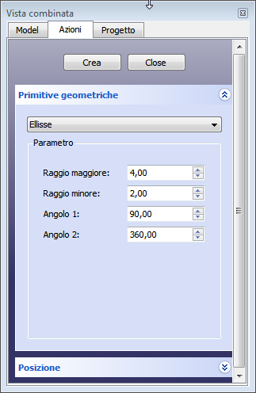

|
| Posizione nel menu |
|---|
| Parte → Crea primitive → Ellisse |
| Ambiente |
| Parte, OpenSCAD |
| Avvio veloce |
| Nessuno |
| Vedere anche |
| .. |
Crea una ellisse o un settore di ellisse parametrico.
Utilizzare il menu  Crea primitive... → Ellisse. Si apre una finestra di dialogo che consente di impostare:
Crea primitive... → Ellisse. Si apre una finestra di dialogo che consente di impostare:
Primitive Geometriche
|  |
Ellisse Parametri
PosizioneEspandere la voce Posizione per stabilire:
I parametri e il posizionamento sono modificabili tramite la scheda delle proprietà. |
{kind=link}
Al dialogo Create Primitives si accede tramite l'icona CreatePrimitives  situata nel menu Part o tramite la barra degli strumenti Parte, nell'ambiente Parte.
situata nel menu Part o tramite la barra degli strumenti Parte, nell'ambiente Parte.
Questo comando crea un bordo curvo ellittico. Con i valori di default, il bordo curvo ellittico è chiuso e quindi è una ellisse. Se vengono modificate i valori predefiniti (0 e 360) delle proprietà Angolo 0 o Angolo 1, il bordo è una curva aperta, un arco ellittico.
Proprietà
- Raggio maggiore: il raggio maggiore dell'ellisse, il valore di default è 4
- Raggio minore: il raggio minore dell'ellisse, il valore di default è 2
- Angle 1: inizio del bordo dell'ellisse o bordo curvo ellittico, (gradi in senso antiorario), il valore di default è 0
- Angle 2: fine del bordo dell'ellisse o bordo curvo ellittico, (gradi in senso antiorario), il valore di default è 360